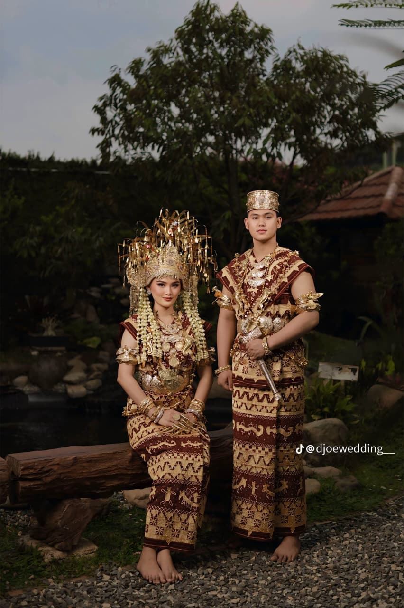

Lampung Pepadun IntimateRizky & Amanda
Pernikahan Rizky & Amanda memadukan adat Lampung Pepadun, Siger 7 lekuk, kopiah emas, dan kain tapis Jung Sarat dalam suasana intim yang anggun.
Venue: The Manor Andara
Dekorasi: Erza Art Decor x Siger & Co.
Catering: Wafda Royal Banquet Catering
Dekorasi: Erza Art Decor x Siger & Co.
Catering: Wafda Royal Banquet Catering
"Keluarga besar dari Lampung Selatan sangat terkesan dengan tata cara adat yang tetap pakem namun dikemas sangat tepat waktu." — Amanda